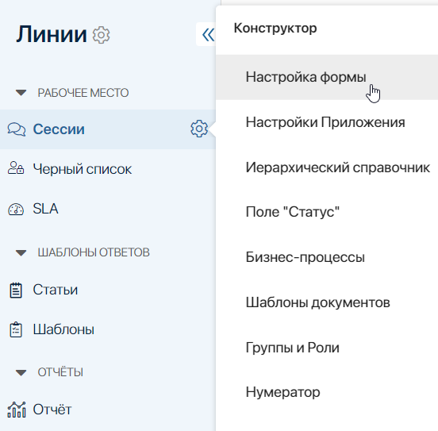
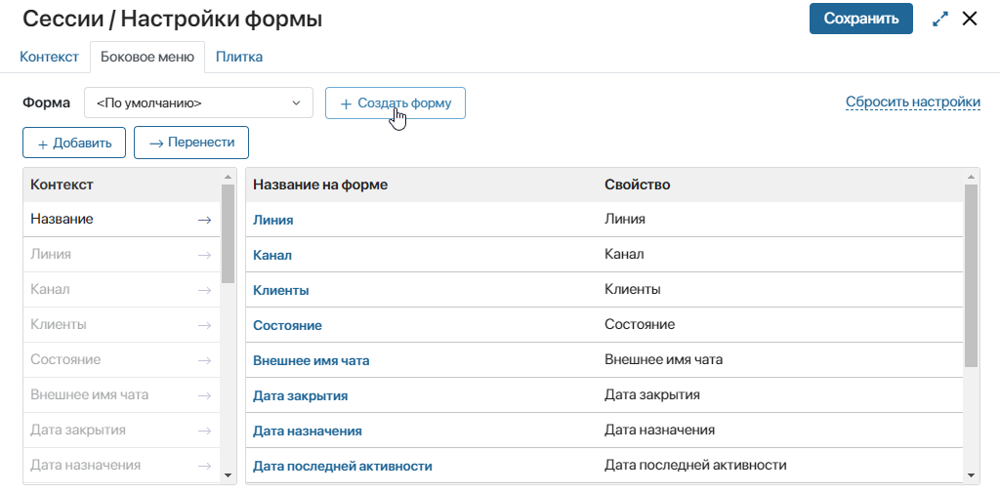
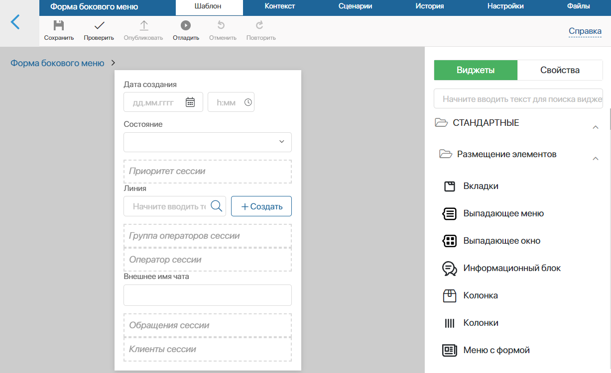
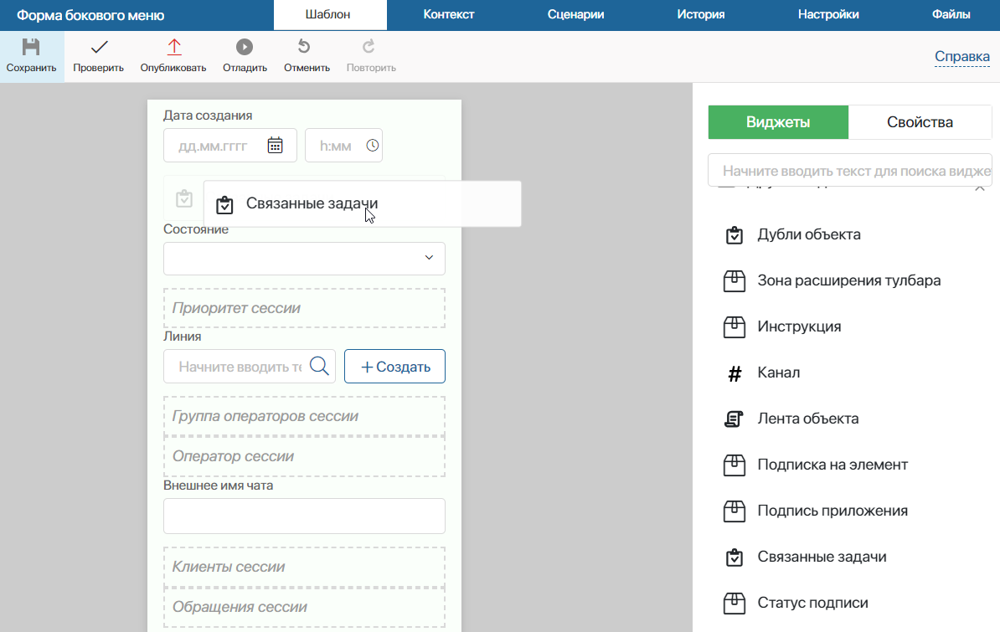
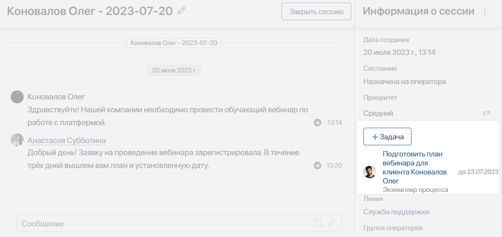
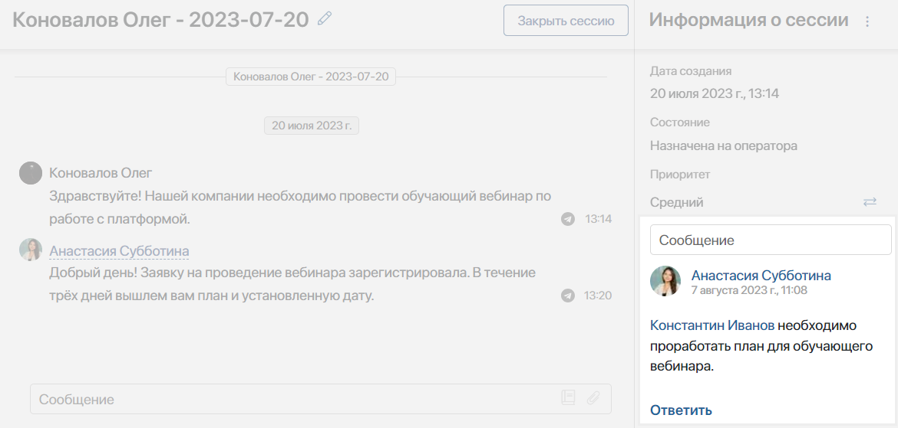
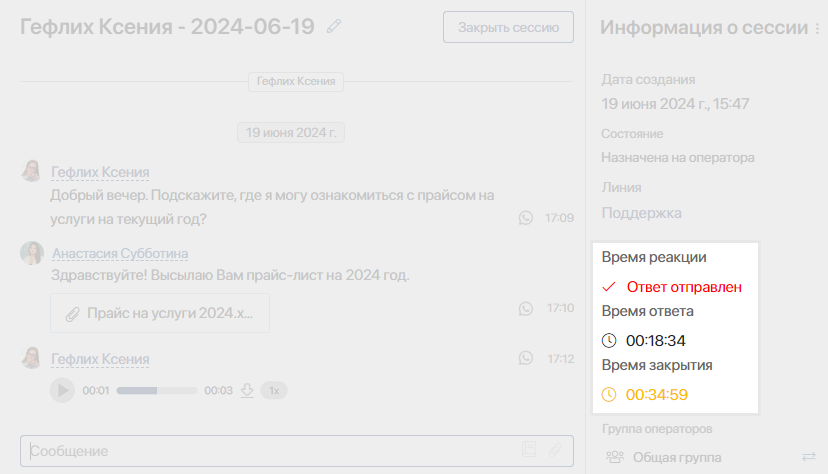
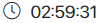
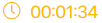
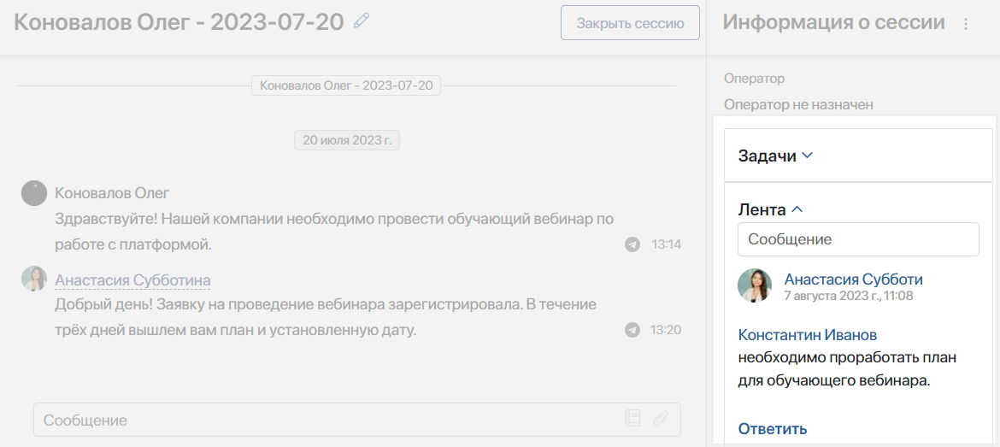

Настройка сессии — это изменение списка её параметров. Параметры используются для хранения информации о сессии и отображаются на её странице. Изменять значения параметров могут супервизоры и ответственные за сессии операторы.
Параметры для сессий настраиваются при создании линии, а также при изменении формы приложения Сессии и применяются ко всем созданным в линии сессиям. Рассмотрим подробнее оба способа.
Настройка параметров при создании линии
В разделе Администрирование при создании и настройке линии пользователь, входящий в группу Администраторы, может определить следующие параметры:
- Настройка шаблона названия сессии.
Чтобы наименование сессии было более информативным, вы можете установить шаблон названия сессии. Шаблон может включать в себя такие параметры, как имя клиента, дата создания сессии, название линии и канала, а также тему письма.
Также операторы и супервизоры могут вручную изменить название сессии на её странице. Для этого в заголовке окна чата нужно нажать на значок карандаша напротив названия сессии.
- Привязка сессий к приложению.
Операторы могут сохранять в системе информацию о клиенте и его обращении со страницы сессии. Например, чтобы быстро добавить клиента в базу, зарегистрировать обращение или создать заявку. Для этого линия должна быть связана с приложениями. Подробнее об этом читайте в статье «Создать линию».
- Предоставление доступа для чтения сессий.
Если к линии привязано приложение, то сессии этой линии могут сохраняться в карточки элементов. Просматривать переписки смогут даже те сотрудники, у которых нет доступа к разделу Линии. Например, в карточке сделки менеджер сможет ознакомиться со всей историей сообщений с клиентом.
Для этого на форме привязанного к линии приложения должен быть размещён виджет Переписка в Линиях, а в настройках линии указаны пользователи, которые будут видеть сессию в карточках приложений.
Настройка параметров из приложения «Сессии»
В настройках приложения Сессии администраторы системы могут изменять параметры, которые хранят информацию о сессии и обратившемся клиенте. Эти параметры отображаются на правой боковой панели страницы сессии.
Например, можно добавить или скрыть параметры, изменить порядок их отображения, а также вынести на панель дополнительные виджеты.
Для этого справа от названия приложения Сессии нажмите на значок шестерёнки и выберите Настройка формы.

Откроется окно Настройки формы, которое содержит две области: слева — все свойства из контекста приложения Сессии, справа — список всех доступных для добавления типов свойств. Подробнее читайте в статье «Типы данных в системе».

Чтобы добавить новые параметры, перетащите свойства с правой панели. Так вы можете добавить поля для внесения дополнительной контактной информации о клиенте или строку для ввода комментария.
Чтобы разместить новые пользовательские свойства на боковой панели страницы сессии, необходимо перейти в расширенный режим настройки формы.
Для этого нажмите кнопку Расширенный режим в правом верхнем углу окна. После подтверждения действия откроется окно с тремя вкладками: Контекст, Боковое меню, Плитка.
Рассмотрим работу с ними подробнее.
Вкладка «Контекст»
На вкладке отображаются все свойства, находящиеся в контексте приложения Сессии. Здесь вы можете создать новые пользовательские свойства, которые можно добавить на правую боковую панель страницы сессии.
С помощью пользовательских свойств операторы и супервизоры могут внести в систему дополнительную информацию о сессии, например, указать контактные данные о клиенте, кратко обозначить суть обращения или оставить комментарий.
Для добавления нового свойства нажмите кнопку + Добавить. Подробнее о работе на этой вкладке читайте в статье «Вкладка „Контекст“».
Чтобы вынести пользовательское свойство на боковую панель страницы сессии, необходимо перейти на вкладку Боковое меню и открыть дизайнер интерфейсов.
Вкладка «Боковое меню»
На этой вкладке вы можете перейти в дизайнер интерфейсов, в котором изменяется внешний вид правой боковой панели. Для этого нажмите <По умолчанию>, затем кнопку + Создать форму. При нажатии на неё откроется окно, в котором можно изменить название формы, заданное по умолчанию.

Для перехода к настройке уже существующего шаблона нажмите кнопку Редактировать форму.
Откроется дизайнер интерфейсов, в котором можно изменить внешний вид правой боковой панели страницы сессии.

По умолчанию на форме расположены следующие элементы:
- Дата создания — системное свойство, в котором фиксируется дата создания сессии;
- Состояние — системное свойство, в котором отображается статус сессии: В очереди, Назначена на оператора, Назначена на бота, Закрыта, В спаме;
- Приоритет сессии — виджет, с помощью которого операторы и супервизоры могут установить приоритет обработки обращения. Для выбора доступны Высокий, Средний и Низкий приоритеты. По умолчанию установлено значение Приоритет не задан;
- Линия — системное свойство, в котором выводится название линии, в которую пришло обращение;
- Группа операторов сессии — виджет, позволяющий супервизорам и операторам просматривать и изменять группу операторов, ответственных за обращение;
- Оператор сессии — виджет, с помощью которого супервизоры и операторы могут назначать сессию на определённого оператора;
- Внешнее имя чата — системное свойство, в котором хранится тема письма или название группового чата;
- Обращения сессии — виджет, с помощью которого можно сохранить информацию об обращении в приложении, указанном в настройках линии в поле Для фиксации обращений. Например, чтобы зарегистрировать заявку;
- Клиенты сессии — виджет, с помощью которого можно сохранить информацию о клиенте в приложении, указанном в настройках линии в поле Для связи учётной записи. Например, чтобы добавить клиента в базу.
Вы можете удалить неиспользуемые свойства, добавить новые, изменить порядок их отображения, а также вынести на панель дополнительные виджеты.
Добавление свойства
На правой боковой панели откройте вкладку Свойства. Выберите из списка свойство, созданное на вкладке Контекст, и разместите его на поле для моделирования.
Обратите внимание, при работе с обращением на странице сессии операторы не могут вручную изменять значения свойств, созданных на вкладке Контекст. Присвоить значения таким свойствам можно с помощью настройки бизнес-процесса, в котором управлять значением свойства будет блок Скрипт. В этом случае оператор сможет запустить процесс со страницы сессии.
Например, можно настроить процесс, в котором поля для ввода дополнительных данных будут расположены на форме стартового события или на форме задачи. После того как оператор внесёт данные, они присвоятся пользовательскому параметру с помощью блока Скрипт.
Подробнее о написании сценариев читайте в справке ELMA365 TS SDK в разделе «Линии».
Добавление виджета
На правой боковой панели откройте вкладку Виджеты. Выберите из списка виджет и перетащите его на поле для моделирования.

После этого откроется окно настройки виджета. Подробнее о каждом виджете читайте в разделе «Типы виджетов».
Рассмотрим примеры использования виджетов на странице сессии.
Пример 1. Связанные задачи
Чтобы операторы в ходе обработки запроса могли назначать коллегам задачи, не переходя со страницы сессии, вы можете вынести на панель виджет Связанные задачи. В этом случае на боковой панели сессии будет отображаться кнопка + Задача, а также список связанных с этой сессией задач.

В карточке поставленной задачи будет отображаться ссылка на текущую сессию.
Обратите внимание, если при создании задачи в качестве исполнителя выбрать сотрудника, у которого нет доступа к разделу Линии, в карточке задачи не будет выводиться ссылка на связанную сессию. Исполнитель сможет выполнить задачу, но не сможет перейти к странице сессии.
Пример 2. Лента объекта
В ходе обработки обращения операторам может понадобиться оставить комментарий к обращению или привлечь к нему внимание супервизора. Для этого на боковую панель необходимо вынести виджет Лента объекта. Тогда на странице сессии появится поле для ввода сообщения, а также все оставленные комментарии.

Обратите внимание, если с помощью функции @упоминание оставить комментарий для сотрудника, который не является супервизором линии или текущим оператором сессии, упомянутый пользователь не сможет перейти на страницу сессии. Однако он получит оповещение в #ленте и сможет ответить на сообщение из неё.
Пример 3. Нормативы SLA для сессии
Если в вашей компании настроен контроль SLA для сессий в линиях, вы можете отображать на странице сессии таймеры по нормативам SLA. Для этого разместите на боковой панели приложения Сессии виджет Нормативы SLA для Сессии.

Тогда операторы и супервизоры смогут видеть установленный срок реакции, ответа и закрытия сессии. Цвет таймера показывает, сколько времени осталось до нарушения:
-  — осталось более 20% отведённого времени;
-  — осталось менее 20% времени;
 — время истекло. В этом случае таймер показывает, сколько прошло с момента нарушения SLA.
— время истекло. В этом случае таймер показывает, сколько прошло с момента нарушения SLA.
Пример 4. Панель с заголовком
С помощью виджета Панель с заголовком можно группировать свойства и другие виджеты. Это позволяет тематически разделять боковую панель на блоки, а также сворачивать объёмные элементы.
Например, можно сделать две сворачиваемые панели и поместить в их виджеты Связанные задачи и Лента объекта, чтобы все задачи и комментарии, созданные в ходе обработки заявки, можно было скрыть с боковой панели.

Вкладка «Плитка»
На данной вкладке выбираются свойства, которые будут отображаться в карточках на странице приложения Сессии при отображении элементов в виде плиток. Подробнее о работе на этой вкладке читайте в статье «Вкладка „Плитка“».